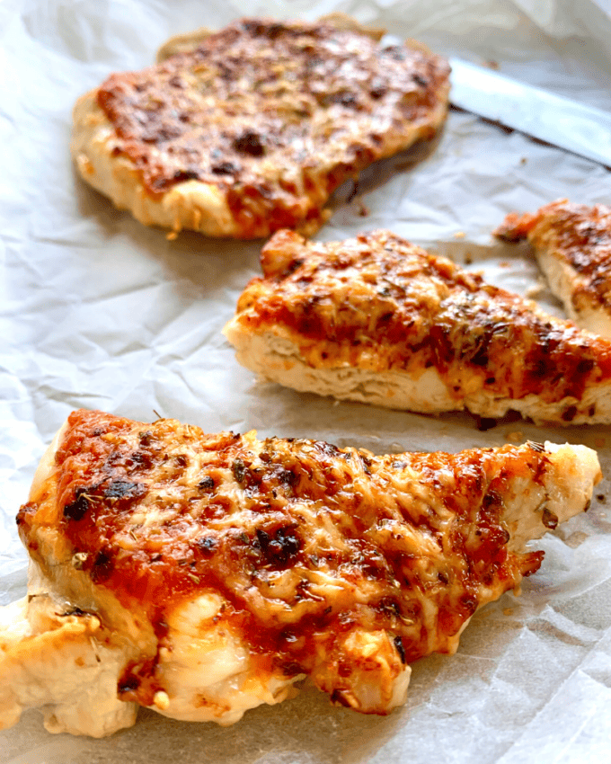

Pizza time

Pizza ingredients
- 1 1/2 cups (355 ml) warm water (105°F-115°F)
- 1 package (2 1/4 teaspoons) active dry yeast
- 3 3/4 cups (490g) bread flour
- 2 tablespoons extra virgin olive oil (omit if cooking pizza in a wood-fired pizza oven)
- 2 teaspoons kosher salt
- 1 teaspoon sugar
Partly how to make it.
Sprinkle some cornmeal on the baking stone in the oven (watch your hands, the oven is hot!).
Gently shake the peel to see if the dough will easily slide, if not,
gently lift up the edges of the pizza and add a bit more cornmeal.
Main Page